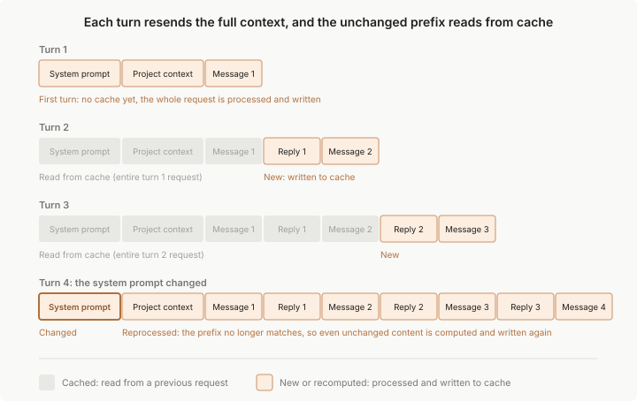

Claude Code 如何使用 prompt caching
Claude Code 自动管理 prompt caching。了解为什么模型切换会触发缓慢的未缓存回合、
/compact的成本、为什么 CLAUDE.md 编辑在会话中期不适用，以及如何检查缓存命中率。
Prompt caching 使 Claude Code 更快、更经济高效。没有缓存，API 会在每个回合重新处理您的完整历史记录。有了缓存，它会重用已经处理过的内容，按照缓存令牌费率对重新读取进行计费，并仅完全处理已更改的内容。
Claude Code 为您处理 prompt caching，除非您禁用它。了解 prompt caching 的工作原理仍然很有用，因为某些操作会使缓存失效，使下一个响应更慢、更昂贵，同时它重建缓存。本页涵盖哪些操作会这样做、为什么某些设置等待重启才能应用，以及当使用量看起来很高时如何检查缓存性能。
缓存的组织方式
每次在 Claude Code 中发送消息时，它都会发出一个新的 API 请求。模型在请求之间不会记住任何内容，因此 Claude Code 会重新发送完整的上下文：系统提示词、您的项目上下文、所有之前的消息和工具结果，以及您的新消息。新内容被附加在末尾，这意味着每个请求的大部分内容与前一个请求相同。提示缓存是 API 避免重新处理未更改部分的方式。
API 通过将每个请求的开始部分（称为前缀）与最近处理的内容进行匹配来进行缓存。在正常的轮次中，前缀是整个前一个请求，只有最新的交互是新的。匹配是精确的，因此前缀中任何地方的更改都会重新计算其后的所有内容。没有按文件或按段的缓存。有关底层机制，请参阅 API 参考中的提示缓存的工作原理。

为了充分利用前缀匹配，Claude Code 对每个请求进行排序，使得在轮次之间很少更改的内容首先出现：
| 层 | 内容 | 何时更改 |
|---|---|---|
| 系统提示词 | 核心指令、工具定义 | 已加载的工具定义集合发生变化时 |
| 项目上下文 | CLAUDE.md、自动记忆、无作用域的规则 | 会话开始时，或在 /clear 或 /compact 之后 |
| 对话 | 您的消息、Claude 的回复、工具结果 | 每个轮次 |
对对话层的更改会使系统提示词和项目上下文保持缓存。对系统提示词的更改会使所有内容失效，因为所有后续内容现在位于不同的前缀后面。第三列给出了常见的触发条件，而不是详尽的列表，下面的部分涵盖了完整的集合。
前缀匹配规则解释了本页上的大多数行为。例如，计划模式和 skill 加载将其指令作为对话消息附加，因此缓存的前缀保持完整。
有两个设置不在层表中出现，但仍然影响缓存的内容：
- 模型：每个模型都有自己的缓存。切换模型会重新计算整个请求，即使内容相同。请参阅下面的切换模型。
- effort 级别：在大多数模型上，每个 effort 级别都有自己的缓存，因此在会话中途更改 effort 级别会重新计算整个请求。在使用 API 密钥或 Claude 订阅的 Opus 5.5、Sonnet 5.5、Haiku 5.5 和 Fable 5.1 上，缓存默认保持完整。请参阅下面的更改 effort 级别。
在会话开始时选择您的模型和 effort 级别，然后将 /compact 留到任务之间的自然间歇时使用。在任务中途进行的更改越少，缓存命中率就越高。
缓存的位置
缓存发生在服务器端，在为您的模型提供服务的基础设施中。具体位置取决于您的身份验证方式：
- API 密钥、Claude 订阅或 Claude Platform on AWS：缓存位于 Anthropic 的基础设施中，通过 Claude API 访问
- Amazon Bedrock 或 Google Cloud 的 Agent Platform：缓存位于您的云提供商的服务基础设施中
- Microsoft Foundry：取决于部署的托管选项。Hosted on Azure 部署在 Azure 基础设施上提供服务；Hosted on Anthropic 部署在 Anthropic 的基础设施上提供服务
- 自定义
ANTHROPIC_BASE_URL或 LLM 网关：缓存位于您的请求被转发到的地方，缓存是否有效取决于网关
Claude Code 还会在对话中途附加系统上下文，例如文件更改通知，并在所有提供商和连接上标记该块以进行缓存，除非您设置了 CLAUDE_CODE_DISABLE_EXPERIMENTAL_BETAS，在这种情况下该块将以未缓存的方式发送。
在提供商自己的端点上，Amazon Bedrock 及其 Mantle 端点、Google Cloud 的 Agent Platform 和 Microsoft Foundry 缓存该块的方式与 Claude API 相同。
当您的请求通过 LLM 网关、自定义 ANTHROPIC_BASE_URL 或云提供商基础 URL 覆盖（例如 ANTHROPIC_BEDROCK_BASE_URL）时，缓存的内容取决于网关如何处理 Claude Code 发送的 cache_control 标记：
- 原样转发标记：该块和您的对话的缓存方式与在提供商自己的端点上相同。
- 以指明
cache_control的400错误拒绝带标记的请求：Claude Code 会重新发送请求，将标记从该块移到您的最后一条对话消息上，并一直保持在那里，直到 Claude Code 退出。该块作为未缓存的输入计费；您的对话保持缓存。 - 删除标记但返回成功：您的整个对话历史在每个轮次上都作为未缓存的输入计费。将块形式的系统内容转换为纯字符串的网关也会以相同的方式丢弃标记。
有关每个提供商存储和处理的内容，请参阅数据使用。无论缓存位于何处，条目都会在一段时间不活动后过期，下面的缓存生命周期涵盖了 TTL 以及如何延长它。
使缓存失效的操作
这些操作可能导致下一个请求部分或全部缓存未命中。您会看到一次速度较慢、成本更高的轮次，之后新的前缀会被缓存。一旦您了解它们的成本，大多数操作都可以在任务中途避免。模型切换可能看起来没有成本，直到您注意到随后速度较慢的轮次。
切换模型
每个模型都有自己的缓存。使用 /model 切换意味着下一个请求会读取整个对话历史记录而没有缓存命中，即使内容相同。
当您在终端运行 /model 时，Claude Code 会要求您确认切换，但仅限于缓存仍然温暖且新模型不是产生最后一个回复的模型时。缓存在 Claude Code 在此对话中最后一次发送请求或 Claude 最后一次回复后的一个缓存 TTL 内保持温暖。一旦该时间过去，缓存就会过期，因此 Claude Code 会在不询问的情况下进行切换。
在 v2.1.238 之前，Claude Code 不检查缓存 TTL，即使在缓存过期后也会询问。
您也可以通过 PreModelSwitch hook 要求此确认或跳过它。
opusplan 模型设置在计划模式下解析为 Opus，在执行期间解析为 Sonnet，因此每次切换计划模式都是一次模型切换并启动新的缓存。
Fable 模型、Opus 5.5、Sonnet 5.5 和 Opus 5 上的自动模型回退也是一次模型切换。当安全分类器将某个请求标记为属于具有备用模型的类别时，Claude Code 会在该模型上重新运行请求，会话也会在该模型上继续。
当 skill 或命令的 frontmatter 指定的 model 不同于会话当前模型时，该轮次也是一次模型切换：下一个请求读取整个对话历史记录而没有缓存命中。会话模型在您的下一个提示词时恢复。context: fork skill 则设置的是分叉子代理的模型。
更改 effort 级别
在大多数模型上，在会话中途更改 effort 级别意味着下一个请求会读取整个对话历史记录而没有缓存命中。当缓存仍然温暖时，Claude Code 会要求您先确认更改。
在 Opus 5.5、Sonnet 5.5、Haiku 5.5 和 Fable 5.1 上使用 API 密钥或 Claude 订阅时，更改 effort 会保持缓存。Claude Code 会在不询问的情况下应用新级别。在 Amazon Bedrock、Google Cloud 的 Agent Platform 或 Claude 应用网关上，或者当您设置了 CLAUDE_CODE_DISABLE_EXPERIMENTAL_BETAS 或您的组织具有 HIPAA 配置时，其行为与大多数模型相同。
在 v2.1.260 之前，在 Fable 5.1 上使用 API 密钥或 Claude 订阅更改 effort 也会使缓存失效。
启用快速模式
快速模式和标准速度各自保留独立的缓存，因此在您启用或关闭快速模式后，下一个请求无法使用另一种速度所缓存的内容。在一个对话中第一次启用快速模式时，下一个请求会以未缓存的方式读取到目前为止的整个对话，并按快速模式费率计费。为了使该成本保持较小，请在会话开始时启用它。
- 如果您在 Claude 工作时启用它，该轮次会以标准速度完成，任何未缓存读取的费用会在您下一轮次的第一个请求上产生。
- 如果您当前的模型不支持快速模式，启用快速模式也会将您切换到 Opus。该模型切换本身会从当前运行轮次中的下一个请求开始启动新的缓存。
之后的每次切换都会以未缓存的方式读取您所切换到的速度尚未缓存的内容。Claude Code 自行进行的速度更改，例如速率限制后回退到标准速度以及稍后返回快速模式，也算作切换。
连接或移除 MCP 服务器
工具定义位于系统提示词层，因此当请求中的工具定义集在轮次之间发生变化时，缓存会失效。切换顾问工具是一个例外：其定义位于缓存断点之后，因此启用或禁用 /advisor 会保持缓存的前缀完整。MCP 服务器的更改是否会导致缓存失效，取决于工具搜索是否延迟加载会话的 MCP 工具，这是受支持模型上的默认行为：
- 工具延迟加载：Claude Code 在整个对话中保持对话第一个请求中的工具列表，因此服务器在会话中途连接或断开连接不会干扰任何已缓存的内容。在第一个请求之后才完成连接的服务器会将其工具作为延迟定义提供，由 Claude 按需加载。
- 工具预先加载：添加定义会使缓存失效，有意移除定义也会。这适用于工具搜索被关闭或不可用的情况，例如：
- Google Cloud 的 Agent Platform 上早于 Opus 4.5、Sonnet 4.5 和 Haiku 4.5 的模型
- Microsoft Foundry 托管于 Azure 的部署，且 Claude Code 检测到该部署拒绝工具搜索时
没有工具搜索时，会话中途的服务器更改是否使缓存失效取决于更改的内容。对于每种更改，下表给出缓存是否保持以及下一个请求中工具定义的变化情况。
| 会话中途的更改 | 缓存 | 下一个请求中的工具定义 |
|---|---|---|
| 服务器连接，或动态工具更新添加工具 | 失效 | 添加新定义 |
| 服务器在您未执行任何操作的情况下断开，例如 stdio 服务器的进程退出 | 保持 | 服务器的定义保持不变。对其工具的调用会返回错误而不是运行，除非 Claude Code 为该调用重新启动服务器 |
| 远程服务器在连接断开后自动重新连接 | 保持，除非在服务器重新连接期间发送的请求添加了 WaitForMcpServers 工具，这会使缓存失效一次 |
服务器的定义保持不变。如果对话尚未列出 WaitForMcpServers，在服务器重新连接期间发送的请求可能会添加它，之后该工具会在对话的其余部分保持列出 |
您有意移除工具，例如使用拒绝规则或在 /mcp 中禁用其服务器 |
失效 | 定义被移除 |
当您恢复一个工具加载到前缀中的对话时，在第一个请求发出时，其中某个 MCP 服务器可能仍在连接中。如果会话记录中记录了该服务器的工具定义，该请求会按记录包含它们，因此当服务器以相同的工具完成连接时，请求不会发生变化。
编辑您的 MCP 配置本身不会改变缓存。新配置仅在重启后生效，届时服务器才会连接或断开连接。
启用或禁用插件
当您启用或禁用插件时，更改的成本取决于插件提供的组件类型。下面的情况涵盖每种组件类型、Claude Code 何时应用更改，以及在同一会话中再次禁用插件时会发生什么。
保持缓存的插件组件
Claude Code 永远不会因插件的 skill、命令、Agent、hook、监视器或主题而使缓存失效。它会将这些内容附加在现有对话之后，因此下一个请求只需为这些内容付费，其之前的所有内容仍从缓存中读取。
提供 MCP 服务器的插件
当您启用或禁用提供 MCP 服务器的插件时，Claude Code 遵循与连接或移除 MCP 服务器相同的规则。
代码智能插件
当您启用代码智能插件时，Claude 会获得 LSP 工具。
插件更改何时应用
您在 /plugin 菜单中所做的更改会通过 /reload-plugins 应用，Claude Code 会在您关闭菜单时为您运行它。无论是附加公告还是完整重新读取，您都会在更改应用后的第一个轮次中支付该成本。Claude Code 也可以自行应用更改：
- 对于具有
command源的插件，Claude Code 可以自行重新加载插件。 - 当您从
/plugin界面安装插件时，Claude Code 可以在安装期间激活它。安装摘要会告诉您是否已激活。 - 当您在 v2.1.246 或更高版本上使用
/cd移动会话时，Claude Code 会在移动过程中应用新目录的设置所启用的插件，而不会出现会搁置/reload-plugins的完整重新读取警告。 - 在交互式会话中，当您在使用
--plugin-dir传入的插件文件夹中添加或移除插件时，更改会立即应用。如果应用它会触发完整重新读取，Claude Code 会搁置该更改，并显示一条通知提示运行/reload-plugins。需要 Claude Code v2.1.265 或更高版本。
当 /reload-plugins 运行且重新加载会触发完整重新读取时，Claude Code 会显示警告且不应用重新加载。运行 /reload-plugins --force 可强制应用。
当您直接在会话中输入 /reload-plugins 时，它也可以在没有交互式终端的会话中运行，例如桌面应用、Agent SDK 以及使用 -p 的非交互模式。需要 Claude Code v2.1.260 或更高版本。
在这些会话中，重新加载会应用除插件 MCP 服务器更改之外的所有内容，插件 MCP 服务器更改会在您的下一个会话中生效，因此永远不会在会话中途导致完整重新读取的成本。
您在一个会话中启用然后禁用的插件
当您禁用在会话中较早启用的插件时，Claude Code 会恢复之前的请求形状。如果该前缀仍在其缓存生命周期内，下一个请求会读取较旧的缓存条目而不是重建。
拒绝整个工具
如果您将 Bash 或 WebFetch 这样的裸工具名称添加为拒绝规则，从您的下一个请求开始，Claude 将无法调用该工具，无论您是通过 /permissions 添加规则，还是直接编辑设置文件。这也包括您在轮次中途通过 /permissions 添加的规则。
当工具搜索处于活动状态时（这是受支持模型上的默认行为），请求的工具定义不会改变，缓存的前缀会保留。当工具搜索不可用或被禁用时，Claude Code 会从下一个请求中移除该定义，这会使缓存失效，之后移除该规则也会。
只有在工具名称位置匹配的拒绝规则才会以这种方式阻止工具：裸工具名称、等效的 Bash(*) 形式，或 "*" 这样的工具名称 glob。仅匹配 MCP 工具的 glob（例如 "mcp__*"）会以相同的方式阻止这些工具。Bash(rm *) 这样的限定范围拒绝规则，以及所有允许和询问规则，不会改变 Claude 看到的工具。Claude Code 会在 Claude 尝试调用时检查它们，保持前缀完整。
压缩对话
压缩会用摘要替换您的消息历史记录。按照设计，这会使对话层失效：下一个请求拥有一个新的、更短的历史记录，与旧的历史记录不共享前缀。系统提示词层和项目上下文层可以保持缓存：
- 系统提示词：下一个请求会从缓存中读取此层，除非某个恢复的对话保留了现已过时的系统提示词。该对话第一次被压缩时，Claude Code 会将其切换为当前的提示词，下一个请求会重建此层的缓存一次。
- 项目上下文：Claude Code 会从磁盘重新加载此层。仅当 CLAUDE.md 和记忆自会话开始以来未改变时，下一个请求才会从缓存中读取它。
为了生成摘要，Claude Code 会发送一个单独的请求。该请求会重复您对话的系统提示词、工具以及正在被摘要的历史记录，并以一条摘要指令结尾。当缓存温暖时，该请求会从缓存中读取您的前缀。因此，会话中途的 /compact 成本只是上下文大小所暗示成本的一小部分，其大部分时间都花在生成摘要上。
在超过缓存生命周期的中断之后，已没有缓存可读，因此摘要请求会将该历史记录作为未缓存的输入重新处理。这就是为什么在您恢复旧会话时 /compact 的成本最高。无论缓存温暖还是已冷，压缩后的轮次都只需为短得多的摘要重建对话缓存，因此该轮次并不是耗时的部分。
当您丢弃的上下文是您不再需要的内容时，压缩对您有利。要选择其开销发生的时间，请在工作中的自然间歇处（例如任务之间）运行 /compact，而不是等待自动压缩在任务中途触发。如果您走上了一条想要完全放弃的路径，请改用 /rewind 回退到较早的轮次。回退会截断回到一个已缓存的前缀，而不是像压缩那样构建新的前缀。
如果您让一个长对话处于空闲状态，且该对话使用的是一小时 TTL，Claude Code 可能会对其进行压缩。要关闭空闲压缩，请将 idleCompaction 设置为 false，这需要 Claude Code v2.1.290 或更高版本。
积累许多图像
API 限制每个请求可以携带的图像和 PDF 数量。有关当前数值，请参阅 API 文档中的请求限制。Claude Code 还会限制请求中图像和 PDF 的总大小，因此大型屏幕截图会比小型屏幕截图以更少的数量达到限制。
当下一个请求会超过任一限制时，Claude Code 会从其发送的内容中移除一批最旧的图像和 PDF，从而为更多内容腾出空间，之后才需要再次移除。Claude 将无法再看到被移除的图像。如果 Claude 再次需要其中某张，请重新分享它。
移除图像会改变包含它们的消息，因此下一个请求会从这些消息中最早的一条开始重新处理对话。由于 Claude Code 每次移除一批，您会看到每批一个较慢的轮次，而不是每张新屏幕截图一个。
升级 Claude Code
新的 Claude Code 版本通常会更新系统提示词或工具定义，因此升级后您开始的第一个对话会从头构建其缓存。自动更新会在后台下载新版本，但在下一次启动时才应用，从不在会话中途应用，因此您会在重启后看到一个未缓存的首个轮次，而不会在会话中途遇到意外。设置 DISABLE_AUTOUPDATER=1 以控制何时应用升级。
有关恢复您在升级前开始的对话的成本，请参阅恢复会话。
保持缓存的操作
这些操作要么追加到对话的末尾，要么根本不触及请求。其中一些操作（例如编辑 CLAUDE.md）保持缓存的原因与该更改在运行会话中不会生效直到 /clear、/compact 或重启的原因相同。
编辑仓库中的文件
文件内容仅在 Claude 读取文件时进入上下文，而读取操作会追加到对话中。编辑 Claude 之前读过的文件不会追溯性地改变历史记录中的早期读取。相反，Claude Code 会追加一条 <system-reminder> 注明文件已更改，Claude 会在需要时重新读取该文件。
在会话中编辑 CLAUDE.md
您的项目根目录和用户级 CLAUDE.md 文件在会话开始时读取一次并保存在内存中。在会话中编辑它们不会使缓存失效，但编辑也不会应用。Claude 继续使用在会话开始时加载的版本。新内容在下一次 /clear、/compact 或重启时加载。
子目录中的嵌套 CLAUDE.md 文件和带有 paths: frontmatter 的规则稍后按需加载。在其加载前自行编辑确实会生效。加载后，内容成为对话历史的一部分，所以中途编辑不会追溯性地改变它。
更改权限模式
在权限模式之间切换，例如从手动模式切换到接受编辑，不会改变系统提示词或工具定义，所以模式更改是缓存安全的。例外是使用 opusplan 模型设置的计划模式，它在您进入或离开计划模式时在 Opus 和 Sonnet 之间切换模型。这使得模式切换成为模型切换。
更改输出样式
当您在会话中使用 /output-style、/config 或 outputStyle 设置切换输出样式时，Claude 从您的下一条消息开始使用新样式。Claude Code 将新样式的指令作为对话中的消息传递，所以该请求仍然从缓存中读取系统提示词和早期对话。
在 v2.1.251 之前，中途样式切换保持缓存但直到您运行 /clear 或启动新会话时才应用。
调用 skill 和命令
Skills 和命令在调用点将其指令作为用户消息注入。对话中早期的任何内容都不会改变。frontmatter 中命名 model 的 skill 或命令可以是该轮的模型切换。
运行 /recap
/recap 生成一个摘要以在您的终端中显示。与 /compact 不同，它将摘要作为命令输出追加而不是替换您的消息历史，所以缓存的前缀保持完整。
回溯对话
/rewind 将您的对话截断回到较早的轮次。剩余的历史是缓存在该点构建时的相同内容，系统提示词和项目上下文层保持不变，所以下一个请求会命中较早的缓存条目。从那时起的每一轮都读过该前缀，即使原始轮次比 TTL 更久远，也保持了该条目的活跃。
恢复文件检查点与对话一起对缓存没有单独的影响。文件内容仅在 Claude 读取文件时进入上下文，与编辑仓库中的文件相同。
恢复会话
当你恢复会话时，Claude Code 会重新发送整个对话，请求会从缓存中读取其前缀中未更改且仍在缓存生命周期内的任何部分。本页顶部的层表说明了每一层的变化。
系统提示词会在Claude Code 升级后或在恢复时使用不同的--append-system-prompt文本时发生变化。默认情况下，恢复的对话会保持其启动时的系统提示词，因此其历史记录仍然位于相同的提示词后面，更改会在对话被压缩或在新对话中生效。恢复的对话中的系统提示词标志涵盖了系统提示词标志在恢复的对话中的情况。
缓存生命周期
缓存的前缀在不活动期间后过期。每个命中缓存的请求都会重置计时器，所以只要您继续工作，缓存就保持温暖。在足够长的间隙之后，下一个请求重新计算完整输入并重新建立缓存，这就是为什么步开后的第一个回合可能明显更慢。
生存时间 (TTL) 控制缓存存活的间隙有多长。API 提供两个：五分钟 TTL 和一小时 TTL，它通过更长的中断保持缓存温暖，但以更高的速率计费缓存写入。较长的 TTL 在您让会话空闲并返回到它时很有帮助，因为您跳过了过期前缀成本的重新处理。对于从不空闲超过五分钟的短工作突发，它成本更高，其中更高的写入速率适用，较长的缓存生命周期未被使用。
每个请求获得哪个 TTL
Claude Code 按请求决定 TTL，每个请求都属于以下两个固定桶之一：
- 主对话：您的交互式回合、非交互式
-p运行和 Agent SDK 回合，加上 Claude Code 与它们内联运行的助手 - 其他所有内容：Claude Code 在该对话之外进行的请求，例如子代理、工作流、进程内队友、分支、压缩和会话标题
除非您自己选择 TTL，否则 Claude Code 仅在您计划包含的使用范围内的 Claude 订阅上请求一小时 TTL。在那里，它为主对话请求一小时，加上 Anthropic 在服务器端控制的一小组助手请求。此表给出了两种计费方式下每个桶的默认 TTL。
| 请求桶 | Claude 订阅，在计划使用范围内 | 使用额度、API 密钥或云提供商 |
|---|---|---|
| 主对话 | 一小时 | 五分钟 |
| 其他所有内容 | 五分钟，除了服务器控制的助手请求获得一小时 | 五分钟 |
一旦您超过套餐的用量限制，Claude Code 开始使用使用额度，您需要为该用量付费，所以 Claude Code 将主对话降低到五分钟 TTL，其缓存写入费率更低。要在那里保持一小时 TTL，自己选择 TTL。
自己选择 TTL
您可以为任一桶设置 TTL。每个控制采用 5m 或 1h，Claude Code 忽略任何其他值。
- 主对话：
promptCacheTtl设置，或CLAUDE_CODE_PROMPT_CACHE_TTL环境变量 - 其他所有内容：
subagentPromptCacheTtl设置，或CLAUDE_CODE_SUBAGENT_PROMPT_CACHE_TTL环境变量
两个设置和两个环境变量都需要 Claude Code v2.1.242 或更高版本。如果您使用 API 密钥登录或使用云提供商，将 promptCacheTtl 设置为 1h 以为主对话提供一小时缓存。其外的请求保持五分钟默认值，直到您也为该桶选择 TTL。
当多个控制适用时，Claude Code 按此顺序采用第一个匹配：
FORCE_PROMPT_CACHING_5M=1，为两个桶强制五分钟- 桶的环境变量
- 桶的设置
- 对于子代理的请求，子代理的
experimentalfrontmatter 字段中的cacheTtl值，需要 Claude Code v2.1.248 或更高版本。当您的 Claude 订阅使用使用额度时，Claude Code 忽略那里的1h ENABLE_PROMPT_CACHING_1H=1，为两个桶请求一小时- 请求桶的默认值
当您调试缓存行为、比较两个 TTL 或覆盖在托管设置中设置的较长 TTL 时，设置 FORCE_PROMPT_CACHING_5M=1。
要确认您的主对话的缓存写入使用了哪个 TTL，运行 claude -p "hello" --output-format json 并读取结果中的 usage.cache_creation。Claude Code 在 ephemeral_1h_input_tokens 下报告一小时缓存写入，在 ephemeral_5m_input_tokens 下报告五分钟缓存写入。
要通过网关或在 Amazon Bedrock 上获得一小时 TTL：
- 您使用
ANTHROPIC_BASE_URL设置的 LLM 网关：部分一小时请求在anthropic-beta标头中传输，所以配置网关以原样转发该标头 - Claude 应用网关：请您的管理员在网关策略中请求一小时 TTL
- Amazon Bedrock：提示缓存支持、最小可缓存前缀长度和一小时 TTL 可用性都因模型而异。如果缓存 token 计数保持为零，请检查 Amazon Bedrock 文档中的支持的模型、区域和限制。
缓存范围
在 Claude Code 中，缓存有效地限定在一台机器和目录。系统提示嵌入了您的自动内存路径，对话以工作目录、平台、shell 和 OS 版本的公告开始。因此，两个不同目录中的会话构建不同的前缀并错过彼此的缓存。
- 您在同一目录中并行运行的会话会构建匹配的前缀，并且可以读取彼此的缓存。
- 顺序会话仅当启动时的 git 状态快照匹配时才共享前缀，因为每个对话也携带该快照中的分支和最近的提交。
底层 API 缓存更广泛。缓存在组织之间隔离，在某些提供商上，在组织内的工作区之间隔离。在这些边界内，只有当两个请求的模型、速度和前缀都匹配时，它们才会共享缓存。
对于运行自动化流程队列的 Agent SDK 调用者，请参阅改进跨用户和机器的提示缓存，以将自动记忆位置移出系统提示词。
检查缓存性能
缓存性能显示为 API 在每个响应上报告的两个令牌计数。实时观看它们的最直接方式是读取 current_usage 对象的状态行脚本：
| 字段 | 含义 |
|---|---|
cache_creation_input_tokens |
在此回合写入缓存的令牌，按缓存写入速率计费 |
cache_read_input_tokens |
在此回合从缓存提供的令牌，按模型的缓存令牌速率计费，低于标准输入速率 |
高读取与创建比率意味着缓存工作良好。如果创建在回合之间保持高位，您的前缀中有什么在改变。使缓存失效的操作部分列出了常见原因。
为了获得每个会话的摘要，运行 /usage。在主对话的第一个响应之后，Claude Code 会在会话块中添加一个Prompt cache (main) 行，显示会话的命中率、未命中计数以及缓存现在是否处于热状态。状态行脚本可以从prompt_cache 对象读取相同的数字。两者都需要 Claude Code v2.1.251 或更高版本。
当 Claude Code 能够识别时，Prompt cache (main) 行还会命名最后一次未命中的可能原因，例如 likely cause: tool definitions changed。可能原因文本需要 Claude Code v2.1.260 或更高版本。
为了在整个组织中获得可见性，OpenTelemetry 导出器报告每个用户和会话的缓存读取和创建令牌。有关指标和事件属性参考，请参阅监控使用。
子代理和缓存
子代理启动自己的对话，具有自己的系统提示和工具集，与父代的分开。它的第一个请求不读取父代的缓存，因为两个前缀不同，并在自己的回合中预热自己的缓存。子代理不在主对话TTL 桶之内，所以即使在订阅上也能获得五分钟，直到你选择更长的时间。
父代的缓存不受影响。从父代的一侧，子代理的调用和结果附加到对话，保留父代的前缀完整。
分叉相比之下，完全继承父代的系统提示、工具和对话历史记录，所以其第一个请求读取父代的缓存。
其他请求也可以读取较早请求缓存的前缀：
- 会话副本：你使用
/fork复制的会话在复制的对话末尾作为消息接收其隔离指令，所以原始对话构建的缓存保持完整。 - 压缩：压缩对话中描述的摘要调用使用相同的前缀共享方法。
- 恢复的子代理：当 Claude 恢复子代理时，恢复运行的第一个请求可以读取原始运行预热的缓存。
- 工作流扇出：在工作流扇出中，相同前缀的代理，Claude Code 默认将除第一个外的所有代理保留最多 5 秒，所以它们的第一个请求可以读取第一个代理缓存的前缀。
禁用 prompt caching
禁用缓存在使用特定模型或提供商调试缓存行为时偶尔很有用。要关闭它，请将以下环境变量之一设置为 1：
| 变量 | 效果 |
|---|---|
DISABLE_PROMPT_CACHING |
对所有模型禁用 |
DISABLE_PROMPT_CACHING_HAIKU |
仅对默认 Haiku 模型禁用 |
DISABLE_PROMPT_CACHING_SONNET |
仅对默认 Sonnet 模型禁用 |
DISABLE_PROMPT_CACHING_OPUS |
仅对默认 Opus 模型禁用 |
DISABLE_PROMPT_CACHING_FABLE |
仅对 Fable 禁用 |
DISABLE_PROMPT_CACHING_HAIKU 适用于默认 Haiku 模型，即 haiku 别名解析到的模型。它在该模型运行的任何地方禁用缓存，包括当它是您的主模型时的主对话。覆盖主对话需要 Claude Code v2.1.283 或更高版本。
该变量还涵盖您使用已弃用的 ANTHROPIC_SMALL_FAST_MODEL 变量设置的后台模型，当该模型与您的主模型不同时。
您固定为主模型的不同 Haiku 版本保持缓存；设置 DISABLE_PROMPT_CACHING 以禁用其缓存。
DISABLE_PROMPT_CACHING_SONNET 和 DISABLE_PROMPT_CACHING_OPUS 分别适用于 sonnet 或 opus 别名解析到的模型。如果您将任何其他 Sonnet 或 Opus 模型 ID 设置为主模型，该模型保持缓存。例如，claude-sonnet-5 上的会话保持缓存，而 sonnet 解析到 claude-sonnet-5-5。要禁用该模型的缓存，请设置 DISABLE_PROMPT_CACHING。
要在整个组织中设置缓存策略，请将这些或TTL 变量中的任何一个放在托管设置的 env 块中。对于正常使用，保持缓存启用。
相关资源
- 从构建 Claude Code 中学到的经验：Prompt caching 就是一切：Plan Mode、延迟工具加载和压缩的设计原理
- 探索上下文窗口：什么加载到上下文中以及何时加载
- 减少令牌使用：超越缓存的策略，用于管理上下文大小
- 跟踪和减少成本：Agent SDK 调用者的缓存令牌跟踪和 TTL 配置
- Prompt caching：底层 API 机制、断点和定价